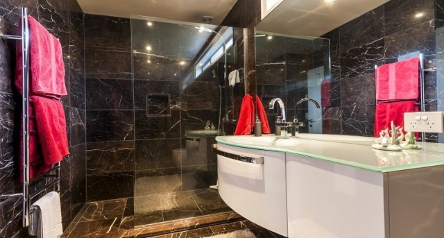
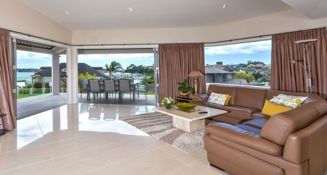

Your local professional tilers providing the highest quality tile finishes across Auclaknd
Welcome to Jo Janssen & Sons, your dedicated local tile installtion specialists. We can complete domestic, commercial and industrial work. With over 30 years involvement in the industry we have a wealth of knowledge and experience that enable us to complete all manner of jobs to the highest quality finish. So call Hans today for a free quote!
Based in Papakura, Jo Janssen & Sons is owned and operated by Jo, Hans and [other son?] Janssen. We have been in the industry for over 30 years and you can rest assured we are associated with [any accreditation].
No job is too big or too small for us and we are happy to take care of any and all of your tiling needs. We specialise in:
"Jo Janssen & Sons have an excellent reputation in the industry and so I was expecting a top quality job. Even so, Hans exceeded all my expectations and has provided the service only a true master craftsman can provide. He was able to start the job at short notice and the finish he has achieved is truly exceptional. He was also able to provide advice based on his 30 years experience that altered our plans slightly to achieve a result that screams top quality. Don't hesitate to contact Jo Janssen & Sons for any tiling work you need done" - Liam
"Hans is a craftsman and a joy to deal with, I highly recommend him. He has hand cut a stunning tile shower base for my frameless glass shower, together with fixing tiled shower walls and new purpose built wall for an in wall toilet. Rather than having standard steel edging I chose to have the edges mitred and that time consuming decision has finished off an all round stunning job. I truly appreciated the advice and guidance given me, about something I knew nothing, Hans is a true professional" – Dianne
Read more of our excellent ratings on the No Cowboys website